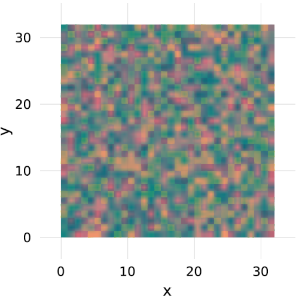
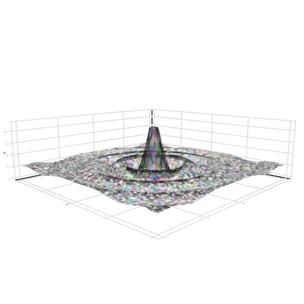
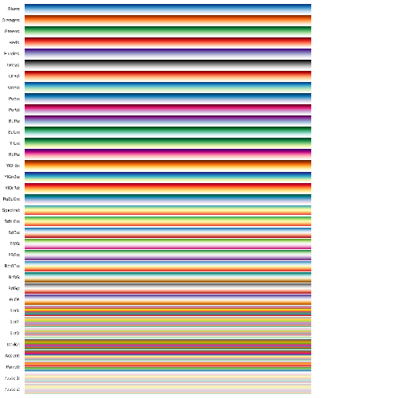

image
Test heatmap + image overlap
Tags: 2d, heatmap, image, transparency.
using Makie
heatmap(rand(32, 32))
image!(map(x->RGBAf0(x,0.5, 0.5, 0.8), rand(32,32)))

image
Tags: 2d, image.
using Makie
AbstractPlotting.vbox(
image(Makie.logo(), scale_plot = false),
image(rand(100, 500), scale_plot = false),
)

Subscenes
Tags: 2d, image, scatter, subscene.
using Makie
img = rand(RGBAf0, 100, 100)
scene = image(img, show_axis = false)
subscene = Scene(scene, IRect(100, 100, 300, 300))
scatter!(subscene, rand(100) * 200, rand(100) * 200, markersize = 4)
scene

Surface with image
Tags: 3d, image, surface.
using Makie
N = 30
function xy_data(x, y)
r = sqrt(x^2 + y^2)
r == 0.0 ? 1f0 : (sin(r)/r)
end
r = linspace(-2, 2, N)
surf_func(i) = [Float32(xy_data(x*i, y*i)) for x = r, y = r]
surface(
r, r, surf_func(10),
color = rand(RGBAf0, 124, 124)
)

Image on Surface Sphere
Tags: 3d, image, sphere, surface.
using Makie
n = 20
θ = [0;(0.5:n-0.5)/n;1]
φ = [(0:2n-2)*2/(2n-1);2]
x = [cospi(φ)*sinpi(θ) for θ in θ, φ in φ]
y = [sinpi(φ)*sinpi(θ) for θ in θ, φ in φ]
z = [cospi(θ) for θ in θ, φ in φ]
rand([-1f0, 1f0], 3)
pts = vec(Point3f0.(x, y, z))
surface(x, y, z, color = Makie.logo())

image scatter
Tags: 3d, image, scatter.
using Makie
scatter(
1:10, 1:10, rand(10, 10) .* 10,
rotations = normalize.(rand(Quaternionf0, 10*10)),
markersize = 1,
# can also be an array of images for each point
# need to be the same size for best performance, though
marker = Makie.logo()
)

colormaps
Tags: colorbrewer, colormap, documentation, image, meta, translate.
using Makie
h = 0.0
offset = 0.1
scene = Scene()
cam2d!(scene)
plot = map(AbstractPlotting.colorbrewer_names) do cmap
global h
c = to_colormap(cmap)
cbar = image!(
scene,
linspace(0, 10, length(c)),
linspace(0, 1, length(c)),
reshape(c, (1, length(c))),
show_axis = false
)[end]
text!(
scene,
string(cmap, ":"),
position = Point2f0(-0.1, 0.5 + h),
align = (:right, :center),
show_axis = false,
textsize = 0.4
)
translate!(cbar, 0, h, 0)
h -= (1 + offset)
end
scene
